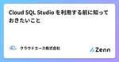
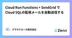
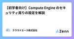
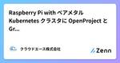
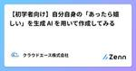
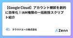

クラウドエース株式会社さんのフィード
https://zenn.dev/cloud_ace
クラウドエース株式会社 公式技術ブログです。 ※本サイトに掲載されている商品またはサービスなどの名称は、各社の商標または登録商標です。
フィード

Cloud SQL Studio を利用する前に知っておきたいこと
クラウドエース株式会社さんのフィード
はじめにこんにちは！クラウドエース株式会社 第一開発部の雲野テックです。今回は、Cloud SQL Studio を利用する前に知っておきたいことについてお伝えします。Cloud SQL Studio は便利な機能ですが、事前に知っておくとより効果的に、あるいは安全に活用できるポイントもあるので、ぜひ最後までお読みください。 対象読者Cloud SQL を使っている方で、これから Cloud SQL Studio の利用を検討している方 目次従来の Cloud SQL インスタンスへのアクセス方法Cloud SQL Studio とはCloud SQL S...
5時間前

Cloud Run Functions + SendGrid で Cloud SQLの監視メールを自動送信する
クラウドエース株式会社さんのフィード
1. はじめにクラウドエース安田です。システム運用においては、Cloud SQL などのリソースの稼働状況や異常をいち早く把握し、迅速に対応することが重要です。そのため、監視結果を定期的にメールで受け取ることで、運用担当者が異常や傾向変化にすぐ気付き、障害の予防や早期対応につなげることができます。しかし、こうした監視メールを人力で送る運用では、手間やミスが発生しやすく、運用負荷も高まります。こうした課題を解決するために、監視メールの自動化が有効な手段となります。この記事では、Google Cloud の Cloud Run Functions を使用して Cloud SQL ...
10時間前

【初学者向け】Compute Engine のセキュリティ周りの設定を解説
クラウドエース株式会社さんのフィード
はじめにこんにちは。クラウドエースの中野（大）です。今回は Google Cloud の Compute Engine のセキュリティ周りの設定について書いていきたいと思います。 Compute Engine のセキュリティクラウド上の仮想サーバは、設定次第で意図しないアクセスや攻撃のリスクに晒される可能性があります。適切なセキュリティ設定は、データ漏洩やサービス停止を防ぐために不可欠です。以下からの章は、GCE インスタンスを作成する際に設定することができるセキュリティ項目です。 サービスアカウントご存じの方もいらっしゃると思いますが、GCE インスタンスへどのよ...
1日前

Raspberry Pi with ベアメタル Kubernetes クラスタに OpenProject と Grafana を構築する 1
1
クラウドエース株式会社さんのフィード
はじめにこんにちは、クラウドエース株式会社の三原と申します。最近、加齢と共に認知能力が衰退していくのを感じる今日この頃です。加齢の一方で、日常的なタスクの増加に拍車が掛かっており、脳内でタスクを管理するのに限界を感じております。なので、日常でもタスク管理ツールを導入しようという課題がありました。ただ、SaaS に頼るのも面白くないと感じました。どうせなら、セルフホスト型のものを好きに使いたいと思ったわけです。そして、昨今のコンテナオーケストレーションの技術選定において、Amazon EKS や Google Kubernetes Engine 等のマネージド Kubernet...
6日前

【初学者向け】自分自身の「あったら嬉しい」を生成 AI を用いて作成してみる
クラウドエース株式会社さんのフィード
はじめにクラウドエース 第一開発部の濱です。普段生活していて「これあったら便利なんだけど、ちょっと満足できないんだよなぁ」と思うこと、よくあると思います。有料アプリしかない欲しい機能がない自分専用にカスタマイズしたいこうなってしまった場合、妥協するか...ではなく、簡単な機能なら生成 AI を用いて自分で作ってしまえばいいと考えています。 私の「あったら嬉しい」と思った瞬間先日 (2025年2月28日)、モンスターハンターワイルズが発売されました。私はゲームが大好きで、本作もよくプレイしています。現状の最終コンテンツまでクリアして、あとは最強の装備を作成するの...
8日前

【Google Cloud】アカウント棚卸を劇的に効率化！IAM権限の一括削除スクリプト紹介
クラウドエース株式会社さんのフィード
クラウドエース DevSecOps 事業部の羽田です。Google Cloud の IAM 権限削除を効率化するスクリプトを紹介します。 はじめに本記事は、Google Cloud の複数リソース（組織/フォルダ/プロジェクト）にまたがる特定アカウント（ユーザー/グループ/サービスアカウント）の全ての IAM ロールを一括で削除するためのスクリプトを紹介します。Google Cloud の環境において、IAM 権限の定期的な棚卸は非常に重要です。退職者アカウントや使われなくなったサービスアカウントの権限を放置してしまうと、内部統制や外部監査といったコンプライアンス要件に違反し...
8日前

Custom Webhook で Auth0 ログを BigQuery に保存する
クラウドエース株式会社さんのフィード
はじめにこんにちは、クラウドエースの第三開発部に所属している康と申します。今回は、Auth0 の Custom Webhook（Log Streaming）機能を使って、ログを Cloud Run Functions（旧称 GCF）経由で BigQuery（BQ）に保存する方法をご紹介します。!Auth0 の Log Streaming 機能は、Essentials プラン以上でご利用いただけます。https://auth0.com/pricing 対象読者Auth0 のログ保存期間に課題を感じている方Auth0 のログ保存のために Splunk や Datad...
14日前
Java の環境構築方法(M1 Mac,Java 21)
クラウドエース株式会社さんのフィード
はじめにこんにちは、クラウドエースの許です。今回は Java 21 の環境構築方法を紹介していきます。Java の環境構築の記事は意外と少ない(執筆主調べ)と感じたので、こちらを参考に構築していただければと思います。 前提環境環境: Mac M1ProIDE: IntelliJ 2025.1 (Visual Studio Code でも問題ない)JDK: Java 21shell: zshdistribution: Temurin 環境構築手順Java の環境構築は意外と簡単にできます。以下の 3 ステップで完了します。ディストリビューションのイン...
14日前
【Auth0 活用】② OIDC & SAML を利用した SSO 認証の連携
クラウドエース株式会社さんのフィード
1. はじめにこんにちは、クラウドエース第三開発部の秋庭です。今回は Auth0 の活用方法として、OIDC と SAML プロバイダの登録についてご紹介できればと思います。前回は FE と BE の SDK でそれぞれどのようなことが出来るのかをまとめました。https://zenn.dev/cloud_ace/articles/bfff5ad2a58d1aユーザー認証において、OIDC や SAML を利用した ID プロバイダでのログイン提供はサービスの UX の向上に欠かせません。本記事では、Auth0 において、OIDC および SAML を使用するプロバイダを...
14日前
Google スプレッドシートの生成 AI でデータ分析が簡単に！新機能「Gemini in Sheets」を試してみた
クラウドエース株式会社さんのフィード
はじめにこんにちは。クラウドエース株式会社 第二開発部の齋藤です。Google スプレッドシートを使う中で、「この操作はどうやるんだっけ？」と調べたり、「もっと効率よくデータ整理や分析ができないかな？」と感じたりすることはないでしょうか？そんな時に役立つのが、Google スプレッドシートの「Gemini in Sheets」です。この機能を使えば、スプレッドシートのサイドパネルから直接 Gemini に質問したり、データ作成や分析の指示を出したりできます。今回は、Google Workspace に搭載された Gemini の機能の一つであるGemini in Shee...
19日前
プロジェクト運用前に知っておきたいIAMの考え方
クラウドエース株式会社さんのフィード
はじめにこんにちは、クラウドエースの梶尾です。Google Cloud でプロジェクトを立ち上げるとき、ついリソースの作成やサービスの設定に集中してしまいがちです。でも、実はその前に考えておくべき大切なことがあります。それが「アクセス管理」、つまり 誰が、どこまで操作できるか というルールを決めることです。Google Cloud では、このアクセス管理を担っているのが IAM（Identity and Access Management） という仕組みです。IAM を正しく理解し、使いこなせるようになると、チームの誰に何の権限を与えるかを明確にコントロールでき、プロジェ...
19日前
BigQuery の RANGE 関数まとめ
クラウドエース株式会社さんのフィード
はじめにこんにちは、クラウドエースの柏倉です。今回は、BigQuery の RANGE 関数についてご紹介します。 RANGE 関数BigQuery における RANGE 関数（Range functions）は、RANGE 型の区間データを使って、区間同士が隣接しているか、重複しているかといった関係を調べることができます。区間における「重複」と「隣接」の違い重複：区間が重なりあっている (区間 1 の一部の区間と区間 2 の一部の区間が重なる)隣接：区間が隣り合っている (区間 1 の終了値と区間 2 の開始値が同じ) RANGE 型とはRANGE 型は...
20日前
Langfuse で LLM の出力を評価し、その信頼度を測る
クラウドエース株式会社さんのフィード
はじめにこんにちは。クラウドエース第三開発部の泉澤です。以前はデータソリューション系の開発部に所属し、現在は生成AI を活用したサービス開発に取り組んでいます。LLM アプリの自動評価手法として、LLM に評価を実施させる LLM‐as‐a‐Judge が注目されています。しかし、その自動評価結果がどの程度信頼できるのか、またどのように改善していけばよいのかを検証するのは容易ではありません。そこで、本記事では、Langfuse を活用して以下のプロセスを実践する方法を考え、実際に LLM に生成（翻訳）してもらったデータを使い、LLM-as-a-Judge の評価と人間による評...
23日前
Dataflow ワークロードでスケールを考慮した VPC 設計
クラウドエース株式会社さんのフィード
クラウドエースのダッフィ、安田、羽田です。Dataflow ワークロードでスケールを考慮した VPC 設計について紹介します。 概要結論として、Dataflow ワークロードでスケールを考慮した VPC 設計の最適解は使用するサービスなどによって変わります。この記事では、最適解を見つける方法として以下の 3 つのポイントに基づいて解説します。小さいサブネットを作って適切な範囲を調査するデフォルトのスケールアウト制限を基にして /21 に設定するmax_num_workers を指定しスケールアウト上限を設ける上記の方法を試すことで自身の使用する Dataflow ...
23日前
Argo CD のデプロイ結果を Slack へ通知させる方法
クラウドエース株式会社さんのフィード
クラウドエース 北野です。Argo CD の結果を Slack に通知する方法を紹介します。 概要Argo CD の結果を Slack に通知するには、以下を実施します。Slack アプリと通知先チャンネルの作成Configmap argocd-notifications-cm に通知方法の定義Application への通知設定 metadata.annotations の定義Configmap argocd-notifications-cm の内容は次のとおりです。cm-argocd-notification.yamlapiVersion: v1kind:...
23日前
コントリビュートチャンスを逃すな
クラウドエース株式会社さんのフィード
どうもこんにちはクラウドエースの妹尾です。今回は弊社で起きたちょっとしたトラブルから始まった、オープンソースソフトウェア(以下 OSS)の開発活動についての記事を書きたいと思います。 Zenn 記事がデプロイされないそれは僕が Cloud Run の新機能についての記事を書いていた時のことでした。 push した記事が公開されなかった弊社の技術ブログは Zenn というプラットフォームで展開されていますが、これは zenn-editor を活用して書かれています。この記事も例に漏れず、 zenn-editor に含まれている zenn CLI で雛形の作成からプレビュ...
1ヶ月前
【初学者向け】Google Cloud の Secret Manager ってなんだ
クラウドエース株式会社さんのフィード
はじめにこんにちは。クラウドエースの中野（大）です。今回は Google Cloud のシークレットおよび認証情報の管理サービスである Secret Manager についてまとめようと思います。 対象読者Google Cloud を学びたての方Google Cloud の別のサービスはよく使用しているが、Secret Manager のことについて分からない方上記のような方を対象として執筆しました。 Secret Manager とはSecret Manager は、API キー、ユーザー名、パスワード、証明書などの機密データを安全に保存および管理するための...
1ヶ月前
MCP は大きな問題を抱えている？導入前に検討すべき課題と知っておくべきセキュリティリスク
クラウドエース株式会社さんのフィード
はじめにこんにちは。クラウドエースの荒木です。AI と外部システムの連携を標準化する Model Context Protocol (MCP) が、2024 年後半に Anthropic 社から発表されて以来 [1]、界隈では大きな注目を集めています。AI が様々なツールやリソースへ簡単にアクセスできるようになる「AI のための USB-C」というコンセプトは非常に魅力的です。実際に MCP に対応する Cursor や Zed といった開発ツールやさまざまな MCP サーバーなどが登場したことでエコシステムは着実に広がり、盛り上がりを見せています。私も以前、MCP の基本的な仕...
1ヶ月前
これでスッキリ！IPアドレスの基本と割り当てを初心者向けに解説
クラウドエース株式会社さんのフィード
はじめにこんにちは、クラウドエースでネットワークギルドに所属している梶尾です。突然ですが、IP アドレスとは何か、意識したことはありますか？スマートフォンやパソコンを使うと、特に意識しなくてもインターネットにつながり、YouTube を見たり、Instagram に写真をアップロードしたりできます。でも、世界中のどこにいても正しく通信できるのはなぜでしょうか？その鍵を握るのが IP アドレス です。IP アドレスはインターネット上の「住所」のようなもので、データが正しい宛先に届くために欠かせません。ただ、普段は意識しなくても使えるため、「聞いたことはあるけど、よくわからない...
1ヶ月前
BigQuery ML から LLM を呼び出した時の出力スキーマ、制御できる？
クラウドエース株式会社さんのフィード
TL; DRできますただし、BigQuery 標準テーブルに入っているデータに対してのみであり、かつプレビュー機能を使う必要があります はじめにこんにちは。クラウドエースの田中です。この記事では BigQuery にて 2025 年 4 月 3 日および 2025 年 4 月 4 日にリリースのあった機能の紹介を通して、BigQuery ML(以下、BQML) から LLM を呼び出した際の出力を、一定の形式にコントロールできるか検証していきます。最後までお読みいただけたら幸いです。 リリース概要4 月 3 日、4 月 4 日のリリースは、下記の関数が Big...
1ヶ月前